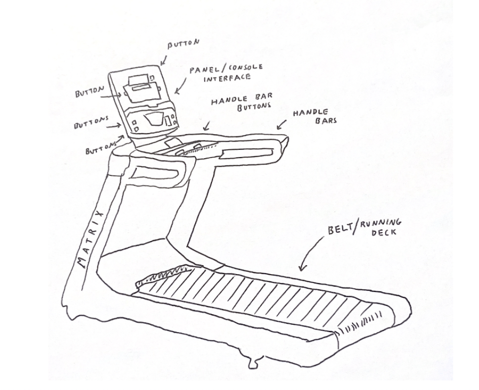

Project: Responsive Redesign
Finding an Interface
Walking around Brown's campus, I stumbled upon a peculiar space, the gym in the Bear's Lair lounge of Graduate Center. Through the glass window, I saw a line of treadmills, all decorated with buttons all over the panel and handlebars. Intrigued, I decided to investigate the user experience of Matrix treadmills
In order to analyze and disect the different components of the treamill, I made an annotated tracing of the made area of interaction.
Interviews
I wrote up interview questions to ask my friends and summarized their responses.
Do you have any experience using a treadmill, and, if so, is it a Matrix treadmill?
- All interviewees answered yes to having experience with using a treadmill.
- All interviewees answered yes to having used a Matrix treadmill, but mentioned that the depicted interface was a different model from the ones they used before.
Do you use large athletic devices with electronic buttons (treadmill, stationary bicycle, rowing machines, etc.)?
- All interviewees answered yes to using large athletic devices.
- Some interviewees added that they currently do not use athletic devices.
If yes, how often do you use a large athletic device with electronic buttons within this semester?
- Of the users who use large athletic devices, the average was twice a week, with the most frequent being 4 times a week and least 1 time a week..
[Interviewee shown image of Matrix treadmill] What are your expectations on the different functionalities provided from using this treadmill?
- Many interviewees noted starting the treadmill, stopping the treadmill, speed adjustment, and incline adjustment as the main features of the treadmill interface.
- A few interviewees also noted other functionalities such as heart rate measurements, cup placeholders, and phone stands.
- Interviewees either did not mention the screen component or commented that they were unsure of the purpose of it.
If you were to interact with this treadmill interface, what motives would cause you to interact with it?
- All interviewees stated that they intend of interacting with a treadmill when they want to exercise by either walking, jogging, or running.
- One interviewee noted that a key motivation would be when they had a desire to run, but not outdoors.
Based on the given treadmill interface, what challenges, if any, would you expect to encounter while interacting with it?
- All interviewees noted that they were not familiar with many of the buttons on the panel. The most common were the fat burn, training workout, rolling hills, and fitness test buttons, all location above the phone stand.
- A few interviewees mentioned that this challenge would be resolved by avoiding the unfamiliar buttons altogether during their interaction with the treadmill as they will only interact with the buttons they need.
Observation
After conducting my interviews, I decided to collect more data through observing users.
- All observed users contained their button interaction to start buttons, stop buttons, and speed adjustment buttons. The rest of the buttons with other functions were not pressed.
- The users either used the +/- button on the handle or on the treadmill board interface to increase/decrease speed. As there was no large intervals to change the speed, users rapidly pressed these buttons.
- All users wore activewear clothing such as running shoes, dry-fit shirts, etc.
- All user ended their session by pressing the red latch or red button on the board to stop the treadmill and stepped off shortly after.
- All observed users began interaction with the treadmill in a calm manner and became more aggressive with pressing buttons as time went on.
Personas
Using the data from my interviews and observations, I constructed two personas for the Matrix treadmill users.
Francine the Freshie is a first-year living in Wayland and is not sure what to concentrate it, but wants to be on the pre-med track. She spends her days filled with fun with her friends and clubs and avidly works hard in her classes. She did cross-country for a year in high school and wants to get back to the habit of running. Since Nelson is so far, she has been going to the gym in Bear's Lair recently
Athletic Adam is a junior studying APMA-Econ and lives in Graduate Center Tower B. Outside of class, he enjoys being involved with the Run Club, playing Spikeball with friends, and hangout with friends at the Main Green. This morning, he goes down to Bear's Lair gym to start his usual routine.
Storyboard
Finally, I made a storyboard for Astrid, highlighting the problem of the complex number of buttons.
Reflection
Through researching the users the Matrix treadmill interface, I learned a lot of insight. I found that many treadmill users are not too bothered by unknown buttons and it does not prevent them from interacting with the treadmill. I also learned that both buttons that complete the same function are used frequently.